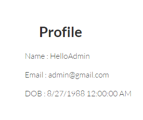
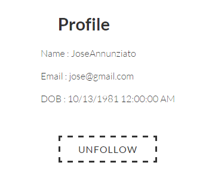
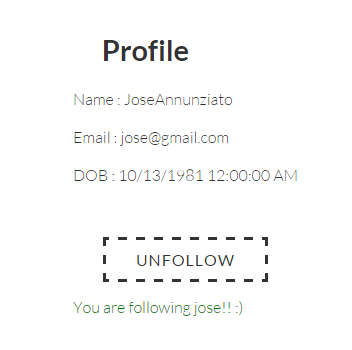
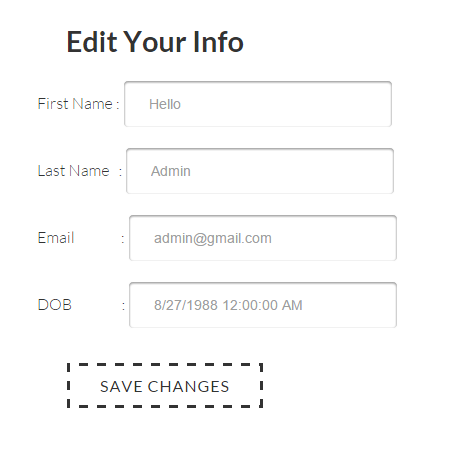
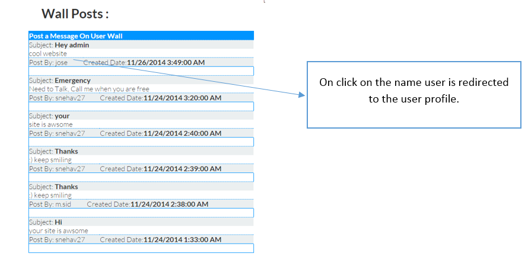
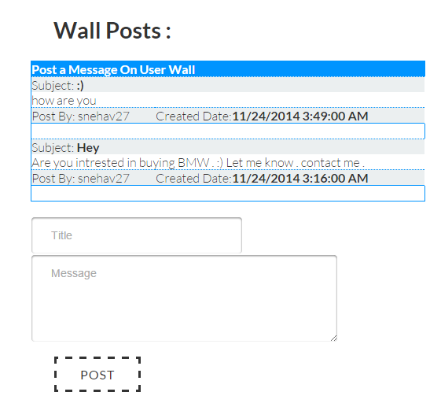

In this website we have login page . User will be able to login and will see his own dashboard.Also user will have permission
only when he is login to redirect to forum, Where all the users can discuss about cars .
Base Technologies used:
1) ASPX
2) HTML,CSS
Responsive:
Fully Responsive , no Bootstrap Used.
Table:(SQL)
Login
User wall posts
Follow Info
Posts
Comments
In Login page only authorized users are allowed login , unauthorized user will not be allowed to login to the application.
Error shown on the screenEvery user has the his/her own dashboard, below is the dashboard of the user who is logged in.
When user navigates to othe profile he should not able to change password or edit profile information of the other user. So these options are hidden for user to access.
We will be seeing in detail about the each dashboard option in the coming sections. (Source code is given in the coming sections)
In my application dashboard contains of the list of followers and list of following user and a welcome message.
Followers and following is fetched from table FollowInfo. Profile view of the other user contains follow button
Login to the page and go to dashboard
There are two types of Dash board views:
1) Admin
2) User
Explanation: profile view contains information of the user, this tab will be accessible to other user who navigate through profiles.
This page contains the FOLLOW and UNFOLLOW button. Where users can navigate through others profile, where they can follow them or unfollow them
Login to the page and go to Profile View
1) Logged in User Profile view.
2) Friends Profile view.
On Unfollow button click following message is displayed:
On Follow button click following message is displayed:
Every user sometimes wants to change password for his login. This tab is responsible to change the password of the user. Change password tab is only shown to the user who has logged in. This button is not shown when user navigates to others profile.
Access to this page:Login to the page and click on Change password
Error messages are thrown when current password is not same as in database.
New password should be same as confirm password else error is shown.
If previous password matches with current password and new password is same as confirm password then the password is changed.
Every user sometimes wants to edit content in his profile. This tab is responsible to allow user to update his profile information. Edit your info button is only shown to the user who has logged in. This button is not shown when user navigates to others profile.
Access to this page:Login to the page and go to Edit Your Info
In this page user will not be able to edit his DOB.
Editable : First name, last name, email
This page will update the information of the user. update operation is done on this page.
Recent activity shows the recent 5 threads, comments, following people are shown on the screen. This tab will be available both logged in user and other users dashboard.
Access to this page:Login to the page and go to Recent Activity.
Wall post page allows other user to message on the walls of others and also check their own wall.
Access to this page:Login to the page and go to Wall Posts.
1) Logged in user wall post: user cannot post on his own wall. So only post that others have done will be shown. And by clicking in the name of the person who created the wall post, user will be able to navigate to posted users wall.
2) Other users wall post : When logged in user navigates to other peoples wall, logged in user will be able to post on their wall.
Forum page is for all the user , where they can sell buy cars, discuss about cars and discuss offtopics
Access to this page:Login to the page and go to Forum.